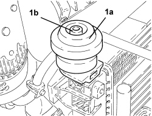
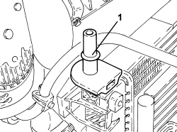

1088B36 UPPER PIN SUPPORTING ENGINE COOLING RADIATOR (ONE), LH OR RH - R&R
- Path
- Procedures > 10 ENGINE > 1088 ENGINE COOLING > 1088B ENGINE COOLING RADIATOR > 1088B36 UPPER PIN SUPPORTING ENGINE COOLING RADIATOR (ONE), LH OR RH - R&R
- Kind
- repair procedure (removal / refitting; the operation number is the code)
- Applies to
- all engines; all production periods
- Interactive page
- https://sloeber94.github.io/elrnDB-aBrrSpdr/en/#/946003037
Applies to: all engines; all production periods
 Removing
Removing
 Refitting
RefittingOp. 7210A15 R.R. FRONT WING/HEADLAMP HOUSING CROSSMEMBER
1. Remove the flexible mounting (1a) and the upper radiator support pin (1b).

Applies to: all engines; all production periods
Refitting
Removing1. Fit the new upper radiator support pin in its housing until the retaining clip clicks into place.

Applies to: all engines; all production periods
- Fit the flexible mounting on the upper radiator support pin.